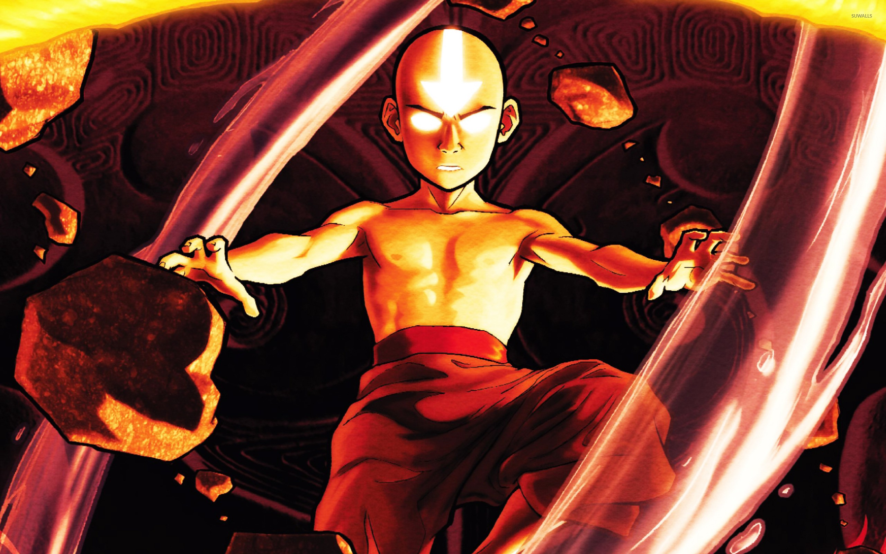

Balance
The central conflict of the finale revolves around Aang's struggle to reconcile his own values as an Air Nomad and his duties as the Avatar. As a pacifist monk with a deep respect for life, Aang does not want to kill Firelord Ozai even as he threatens to destroy the world. Everyone deems it necessary that the Firelord be killed in retribution for his and his ancestors' war crimes; even Aang's friends, including Ozai's own son, see no other way to secure peace and are dismissive of Aang's moral dilemma. The Fire Nation, Earth Kingdom, and Water Tribe Avatars before Aang are similarly puzzled by his internal struggle; they advise Aang to take decisive action, mete out justice, and actively end the Fire Nation threat once and for all.
Being born into a role of power does not rob him of the right to decide what is best. By having the moral courage to stick to his principles of treating all life with respect, he is ultimately able to find an alternative solution to his problem. In doing so, he exemplifies the true nature of the element of air: Freedom. But this freedom is not rooted in escapism or the shirking of his responsibility to the world. Instead, Aang realizes freedom by transcending the false dichotomy of killing another human being or failing his Avatar duties.
To walk this third path was neither easy nor safe; Aang consciously puts his own life in extreme peril in order to hold fast to his principles. The final confrontation is animated specifically to depict the battle of wills between Aang and Firelord Ozai. Aang’s moral strength and unbendable spirit, depicted as a purifying blue light, resists and eventually overcomes Ozai’s corrosive soul. By making the difficult choice to stay true to his principles and his cultural teachings, Aang is able to resolve his inner conflict, bring balance to the world, and grow up without losing the qualities that defined him as an individual.